Lab11_Sequential System Design Using ASM Charts
Introduction
Control unit designs may range from simple to highly complex. There are a number of methods to design and realize control units. Simple control units can be designed using state graphs and state table methods. Complex control units may be designed using algorithmic charts like flowcharts in software development. You will be introduced to the Algorithmic State Machine (ASM) chart technique in this lab.
ASM Charts
Just as flowcharts are useful in software design, special flowcharts called Algorithmic State Machines (ASM) are useful in digital systems hardware design. Digital systems typically consist of datapath processing and the control path. The control path is implemented using state machines, which can be realized using state graphs. As the control path (behavior) of the system becomes complex, it becomes increasingly difficult to design the control path using the state graph technique. The ASM charts technique becomes useful and handy in designing complex and algorithmic circuits. The following diagram shows a complex digital system partitioned into a controller (to generate the control signals) and the controlled architecture (data processor).
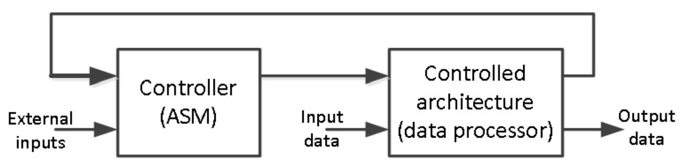
The model of the Controller (ASM) block in the above figure can be viewed as the combination of Mealy and Moore machines, as shown below.
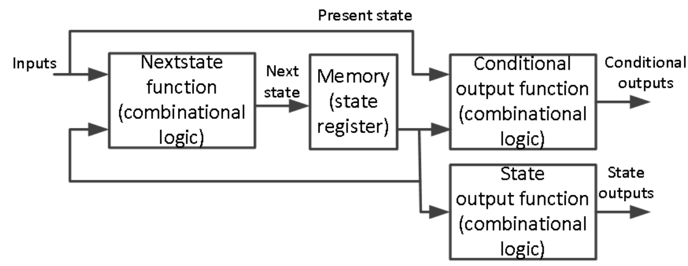
The ASM chart differs from an ordinary flowchart in that specific rules must be followed when constructing the chart. When these rules are followed, the ASM chart is equivalent to a state graph, and it leads directly to a hardware realization. The following diagram shows the three main components of an ASM chart.
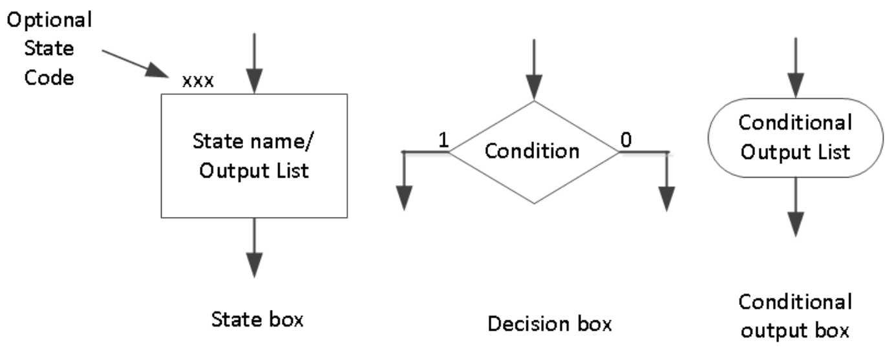
A state box represents the state of the system. The state box contains a state name and may contain an output list (just like in a state graph of the Moore machine). A state code may be placed outside the box at the top (if you want to assign a state code). A decision box always has true and false branches. The condition placed in the decision box must be a Boolean expression that is evaluated to determine which branch to take. The conditional output box contains a conditional output list. The conditional outputs depend on the system’s state and the inputs (just like in the Mealy machine).
The ASM chart is constructed from SM blocks. Each SM block contains exactly one state box, decision boxes, and conditional output boxes associated with that state, as shown below. An SM block has exactly one entrance path and one or more exit paths. Each SM block describes the machine’s operation during the time that the machine is in that state. A path through an SM block from entrance to exit is called a link path.
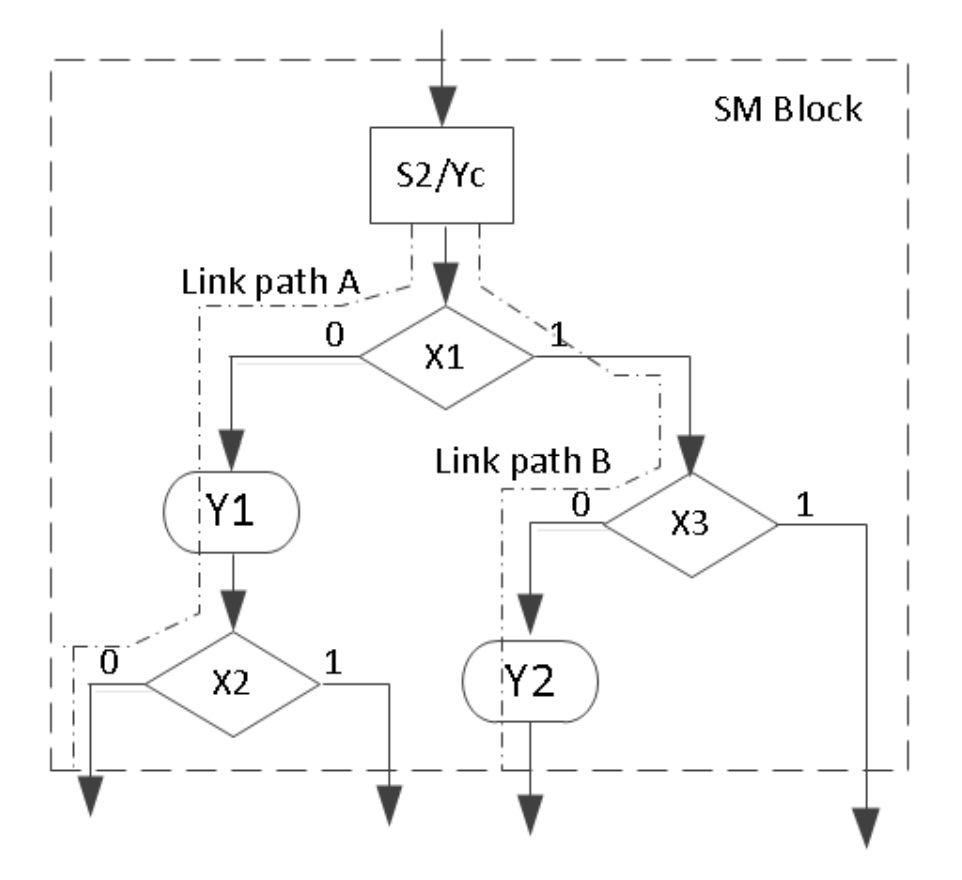
Let us consider an example of a state graph of a sequential network, shown below. This state graph has both Mealy and Moore outputs. The outputs Y1 and Y2 are the Mealy outputs and should be conditional outputs. The Ya, Yb, and Yc are the Moore outputs, so they should be part of the state box. Input X can either be “0” or “1”; hence, it should be part of the decision box.
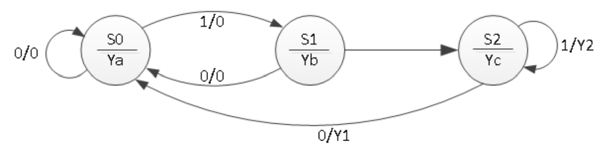
The ASM chart of the above state graph is as shown below.
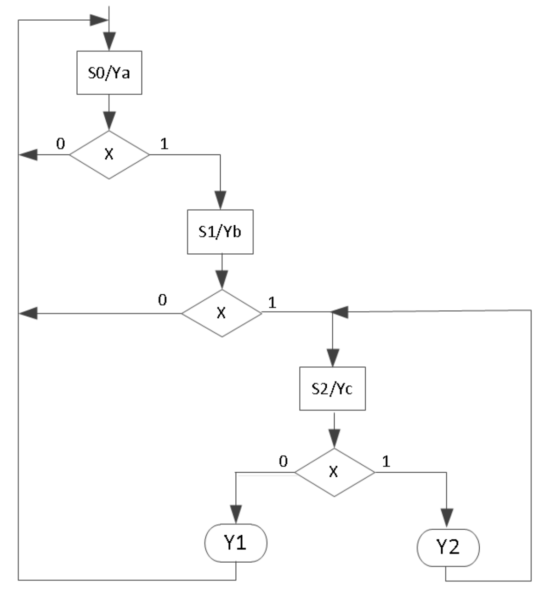
Once the ASM chart is determined, the conversion to HDL is straightforward. A case statement can specify what happens in each state. Each condition box corresponds directly to an if statement (or an else if). The following code represents the functionality of the above ASM chart.
module asm_chart(input clk, input x, output reg ya, output reg yb, output reg yc, output reg y1, output reg y2);
// State declaration
reg [1:0] state, nextstate; // Registers for current and next state
parameter [1:0] S0=0, S1=1, S2=2; // States encoding
// State Update Block
always @(posedge clk) // Updates the current state on every positive clock edge
state <= nextstate;
// Next State and Mealy Output Logic Block
always @(state or x) // Determines the next state and Mealy outputs based on current state and input x
begin
y1 = 1'b0; // Default Mealy outputs
y2 = 1'b0;
case (state) // Decision logic based on current state
S0: if(x) nextstate = S1; else nextstate = S0; // Transitions from state S0
S1: if(x) nextstate = S2; else nextstate = S0; // Transitions from state S1
S2: if(x) begin y2 = 1'b1; nextstate = S1; end else begin y1 = 1'b1; nextstate = S0; end // Transitions from state S2
default: nextstate = S0; // Default case to avoid latches
endcase
end
// Moore Output Logic Block
always @(state) // Determines Moore outputs based solely on current state
begin
// Resetting all Moore outputs
ya = 1'b0;
yb = 1'b0;
yc = 1'b0;
// Setting Moore outputs based on current state
case (state)
S0: ya = 1'b1; // Output for state S0
S1: yb = 1'b1; // Output for state S1
S2: yc = 1'b1; // Output for state S2
default: begin ya = 1'b0; yb = 1'b0; yc = 1'b0; end // Default case to ensure defined outputs
endcase
end
endmodule
The following behavioral simulation result shows the above model functionality.
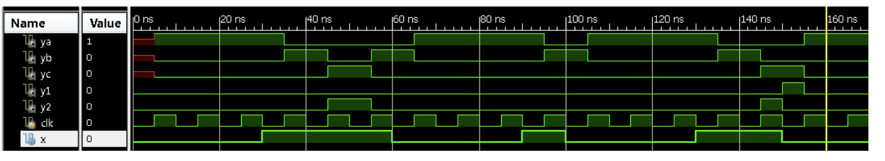
Part11-1-1
Design a 3-bit x 3-Bit binary multiplier. The multiplier will output 6-bit product. The data processor unit will consist of a 3-bit accumulator, a 3-bit multiplier register, a 3-bit adder, a counter, and a 3-bit shifter. The control unit will consist of a least-significant-bit (lsb) of the multiplier, a start signal, a cnt_done signal, and clk as an input. It will generate start, shift, add, and done signals. Develop an ASM chart for the control unit. Develop models for the data processor and the control unit. Develop a testbench to validate the design using the behavioral simulation.
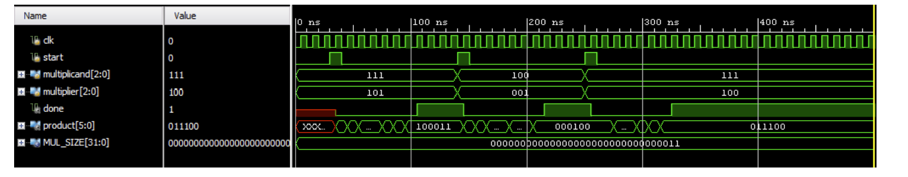
lab11_1_1.v
module ControlUnit(
input clk,
input reset,
input start,
input cnt_done,
input lsb,
output reg shift,
output reg add,
output reg done
);
// State definitions for the finite state machine.
parameter IDLE = 0, CHECK_LSB = 1, ADD = 2, SHIFT = 3, DONE = 4;
// Current state and next state variables.
reg [2:0] state, next_state;
// Sequential logic to update the current state on every positive edge of the clock or when reset.
// If reset is active, the state is set to IDLE. Else, move to the next state based on the current state logic.
always @(posedge clk or posedge reset) begin
if (reset)
state <= IDLE; // Reset the state to IDLE.
else
state <= next_state; // Transition to the next state.
end
// Combinational logic to decide the next state based on the current state and inputs.
// This block sets the next state and control signals based on the state and inputs.
always @(*) begin
case (state)
IDLE:
begin
done <= 0; // Clear the done signal in IDLE state.
if (start) next_state = CHECK_LSB; // If 'start' is active, move to CHECK_LSB.
else next_state = IDLE; // Stay in IDLE if not started.
end
CHECK_LSB:
next_state = lsb ? ADD : SHIFT; // Decide next state based on LSB of the multiplier.
ADD:
next_state = SHIFT; // After addition, shift the bits.
SHIFT:
next_state = cnt_done ? DONE : CHECK_LSB; // If count is done, go to DONE, else check LSB again.
DONE:
begin
done <= 1; // Mark completion.
next_state = IDLE; // Return to IDLE after completion.
end
default:
begin
done <= 0; // In the default case, ensure 'done' is not high.
next_state = IDLE; // Revert to IDLE to handle unexpected states.
end
endcase
end
// Update shift and add control signals based on the current state.
// These signals control the data processing part of the multiplier.
always @(*) begin
shift = (state == SHIFT); // Enable shift operation in SHIFT state.
add = (state == ADD); // Enable addition in ADD state.
end
endmodule
module DataProcessor(
input clk,
input reset,
input start,
input [2:0] multiplicand,
input [2:0] multiplier,
output reg[5:0] product,
output done
);
// Internal registers for multiplication process
reg [2:0] internal_multiplier; // Holds the current value of the multiplier for manipulation.
reg [3:0] accumulator; // Accumulates partial products.
reg [2:0] counter; // Counts the number of shifts (equivalent to multiplication steps).
wire shift, add; // Signals from the control unit for shifting and adding.
reg cnt_done; // Indicates whether all multiplication steps are completed.
wire lsb; // Least significant bit of the multiplier for decision-making in ControlUnit.
reg cnt_done;
reg bits;
reg [2:0] shift_bits;
// Assign least significant bit of the multiplier for use in the ControlUnit.
assign lsb = internal_multiplier[0];
// Sequential logic handling resets, shifting, and addition operations.
always @(posedge clk or posedge reset) begin
if (reset) begin
// Initialization upon reset.
counter <= 3'd3;
accumulator <= 3'd0;
internal_multiplier <= 0;
cnt_done <= 0;
product <= 6'd0;
bits <= 0;
shift_bits <= 3'd0;
end
else if (start) begin
internal_multiplier <= multiplier;
counter <= 3; // For a 3-bit multiplication
end
else if (add) begin
accumulator <= accumulator + multiplicand;
end
else if (shift) begin
internal_multiplier <= internal_multiplier >> 1;
// product <= {accumulator[0], product >>1};
accumulator <= accumulator >> 1;
counter <= counter - 1;
cnt_done <= (counter == 2);
bits <= accumulator[0];
end
if (cnt_done) product <= {accumulator,shift_bits[2:1]};
end
always @(posedge shift) begin
if (reset)
shift_bits <= 0; // Clear shift_data on reset.
else
shift_bits <= {bits, shift_bits[2:1]}; // Shift in new bits on clock edge.
end
// Instance of ControlUnit: manages the state machine controlling the multiplication process.
ControlUnit ctrl(
.clk(clk),
.reset(reset),
.start(start),
.cnt_done(cnt_done),
.lsb(lsb),
.shift(shift),
.add(add),
.done(done)
);
endmodule
tb.v
module Testbench();
// Testbench control signals
reg clk = 0; // Clock signal
reg reset = 0; // Reset signal
reg start = 0; // Start signal to begin multiplication
// Inputs to the DataProcessor
reg [2:0] multiplicand = 3'b101; // Example multiplicand
reg [2:0] multiplier = 3'b110; // Example multiplier
// Outputs from the DataProcessor
wire [5:0] product; // The resulting product of the multiplication
wire done; // Signal indicating completion of the multiplication
// Instantiate the DataProcessor module
DataProcessor dp(.clk(clk), .reset(reset),
.start(start), .multiplicand(multiplicand),
.multiplier(multiplier), .product(product), .done(done));
// Generate a clock with a period of 10 time units
always #5 clk = !clk;
// Define the sequence of events for the test
initial begin
// Reset the system
reset = 1; #10;
reset = 0; #10; // Release reset and start multiplication
start = 1; #10; // Trigger the start of multiplication
start = 0; // Stop the start signal to continue the normal operation
// Wait until the multiplication is complete
wait(done == 1);
#10; // Give extra time to observe the final product
// Reset for next operation
reset = 1; #20; // Apply reset between operations
reset = 0; #10; // Release reset for next operation
start = 1;// Start next multiplication operation
multiplicand = 3'd2; // Change multiplicand
multiplier = 3'd5; #10;
start = 0; // Stop start signal
// Change multiplier
// Wait for the second multiplication to complete
wait(done == 1);
#10; // Give extra time to observe the final product
// Display the result and finish the simulation
$display("Final product: %b", product);
// $finish; // End the simulation
end
endmodule
The following behavioral simulation result shows the above model functionality.
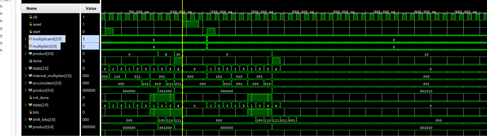
Sequential System Design Using ASM Chart
We saw how the ASM chart technique can be used in designing control units of sequential machines. Now we will use the ASM chart technique along with the sequential design principles to design complex systems.
Part11-2-1
Modify the design of 1-1 to perform 4-bit x 4-Bit unsigned multiplication. You will store the 4-bit multiplicand and multipliers in 32x4 ROM (first 16 locations holding multiplicands and the other 16 locations holding multipliers).
lab11_2_1.v
module ROM_4bit(
input [4:0] address, // 5 bits to cover 0 to 31 addresses
output reg [3:0] data
);
// Define the ROM content
always @(address) begin
case(address)
// Define your 16 multiplicands here
5'd0 : data = 4'b0001; // Example for multiplicand
5'd1 : data = 4'd11; // Another multiplicand
5'd2 : data = 4'd2;
// Add more as needed...
// Define your 16 multipliers here, starting from address 16 (5'd16)
5'd16: data = 4'b0001; // Example for multiplier
5'd17: data = 4'd11; // Another multiplier
5'd18 : data = 4'd10;
// Add more as needed...
// Default case for safety
default: data = 4'b0000;
endcase
end
endmodule
module DPU_4bits(
input clk,
input reset,
input start,
input [4:0] address,
output reg[7:0] product,
output done
);
wire [3:0] multiplicand;
wire [3:0] multiplier;
ROM_4bit multiplicand_rom(.address(address), .data(multiplicand));
ROM_4bit multiplier_rom(.address(address+16), .data(multiplier));
// Internal registers for multiplication process
reg [3:0] internal_multiplier; // Holds the current value of the multiplier for manipulation.
reg [4:0] accumulator; // Accumulates partial products.
reg [3:0] counter; // Counts the number of shifts (equivalent to multiplication steps).
wire shift, add; // Signals from the control unit for shifting and adding.
reg cnt_done; // Indicates whether all multiplication steps are completed.
wire lsb; // Least significant bit of the multiplier for decision-making in ControlUnit.
reg cnt_done;
reg bits;
reg [3:0] shift_bits;
// Assign least significant bit of the multiplier for use in the ControlUnit.
assign lsb = internal_multiplier[0];
// Sequential logic handling resets, shifting, and addition operations.
always @(posedge clk or posedge reset) begin
if (reset) begin
// Initialization upon reset.
counter <= 4'd4;
accumulator <= 4'd0;
internal_multiplier <= 0;
cnt_done <= 0;
product <= 8'd0;
bits <= 0;
shift_bits <= 4'd0;
end
else if (start) begin
internal_multiplier <= multiplier;
counter <= 4; // For a 3-bit multiplication
end
else if (add) begin
accumulator <= accumulator + multiplicand;
end
else if (shift) begin
internal_multiplier <= internal_multiplier >> 1;
accumulator <= accumulator >> 1;
counter <= counter - 1;
cnt_done <= (counter == 2);
bits <= accumulator[0];
end
if (cnt_done) product <= {accumulator,shift_bits[3:1]};
end
always @(posedge shift) begin
if (reset)
shift_bits <= 0; // Clear shift_data on reset.
else
shift_bits <= {bits, shift_bits[3:1]}; // Shift in new bits on clock edge.
end
// Instance of ControlUnit: manages the state machine controlling the multiplication process.
ControlUnit ctrl(
.clk(clk),
.reset(reset),
.start(start),
.cnt_done(cnt_done),
.lsb(lsb),
.shift(shift),
.add(add),
.done(done)
);
endmodule
tb.v
module Testbench();
// Testbench control signals
reg clk = 0; // Clock signal
reg reset = 0; // Reset signal
reg start = 0; // Start signal to begin multiplication
wire [7:0] product; // The resulting product of the multiplication
wire done; // Signal indicating completion of the multiplication
reg [4:0] address = 5'd2;
// Instantiate the DataProcessor module
DPU_4bits dp(.clk(clk), .reset(reset), .address(address),
.start(start), .product(product), .done(done));
// Generate a clock with a period of 10 time units
always #5 clk = !clk;
// Define the sequence of events for the test
initial begin
// Reset the system
reset = 1; #10;
reset = 0; #10; // Release reset and start multiplication
start = 1; #10; // Trigger the start of multiplication
start = 0; // Stop the start signal to continue the normal operation
// Wait until the multiplication is complete
wait(done == 1);
#10; // Give extra time to observe the final product
// Reset for next operation
reset = 1; #20; // Apply reset between operations
reset = 0; #10; // Release reset for next operation
address = 5'd1;// Change multiplier
#10;
start = 1;
// Start next multiplication operation
#10;
start = 0; // Stop start signal
// Wait for the second multiplication to complete
wait(done == 1);
#10; // Give extra time to observe the final product
// Display the result and finish the simulation
$display("Final product: %b", product);
// $finish; // End the simulation
end
endmodule
The following behavioral simulation result shows the above model functionality.
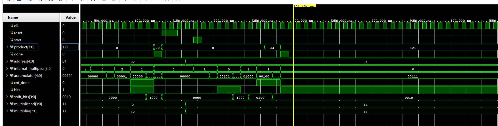
Conclusion
In this lab, you learned how ASM charts can be used to design complex control units. You also designed digital system to perform binary multiplication using the ASM chart technique to develop the control unit which interfaced with the datapath processing unit.
Solution
ASM chart for 1-2
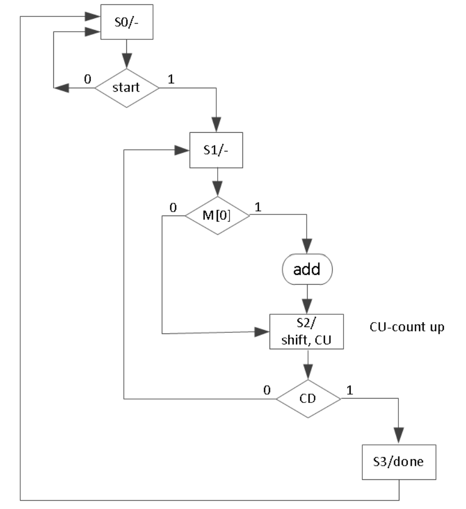
Block Diagram of 2-1
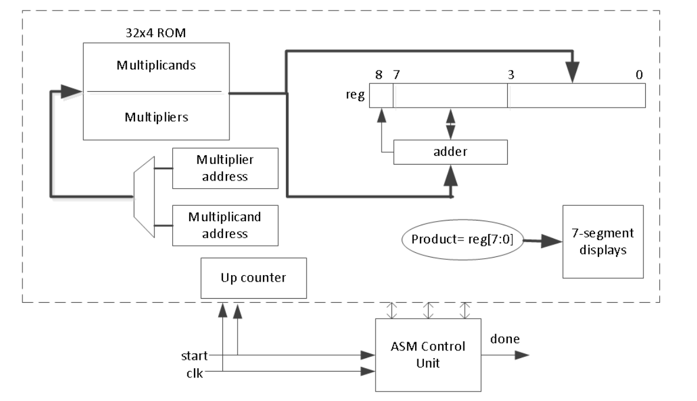